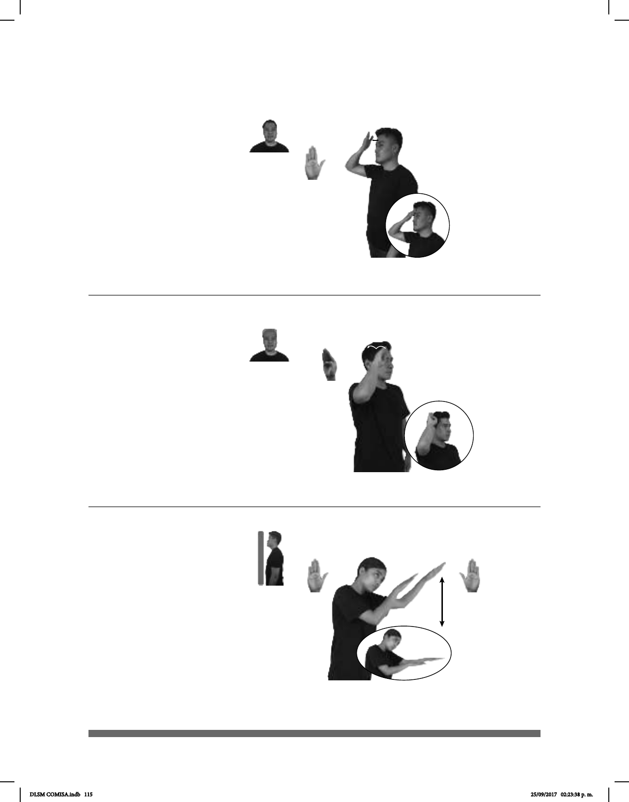

115
(B-P 13)
pos-MI HERMANO
derecha
ACTIVO
Mi hermano es activo.
(B-P 14)
ANTES ADOLFO-LÓPEZ-MATEOS pro-ÉL PRESIDENTE MÉXICO
Adolfo López Mateos fue presidente de México.
Seña: SM
B-P.2
Palma hacia adentro.
Sobre la frente.
La mano golpea la
frente repetidamente.
adj. Que penetra a su
pareja durante la relación sexual.
La seña se usa para la
comunidad sorda LGBTTTI.
Seña: SM
B-P.3
Palma hacia afuera.
A la altura de la cabeza.
La mano simula
dos saltos hacia atrás.
Abogado y político
mexicano que se desempeñó como
el quincuagésimo tercer presidente
de los Estados Unidos Mexicanos,
ejerciendo como tal durante el
sexenio comprendido entre 1958 y
1964.
Seña: SS
Palmas hacia abajo.
Del rostro a la cintura.
Recto.
Cabeza agachada.
v. tr. Reverenciar o
rendir culto a un ser que se considera de
naturaleza divina.
La seña se usa en la
comunidad sorda de los Testigos de
Jehová.
Adorar (B-P 15)
JEHOVÁ pro-YO ADORAR
Adoro a Jehová.
DLSM COMISA.indb 115 25/09/2017 02:23:38 p. m.